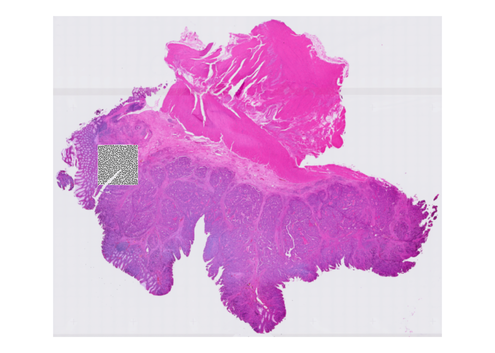
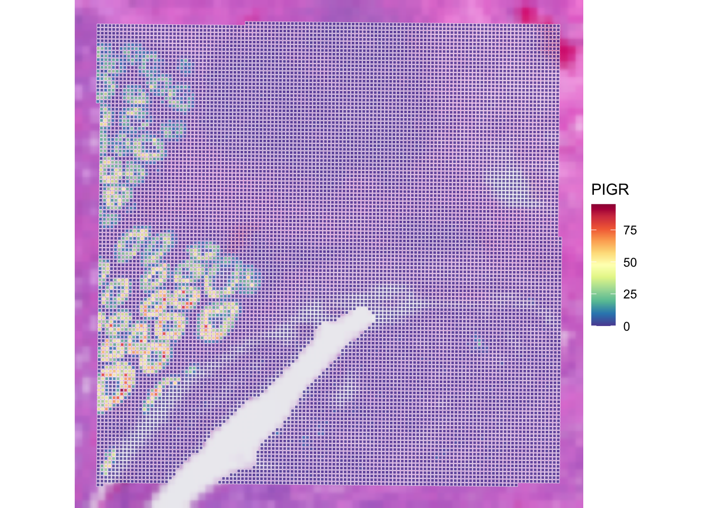
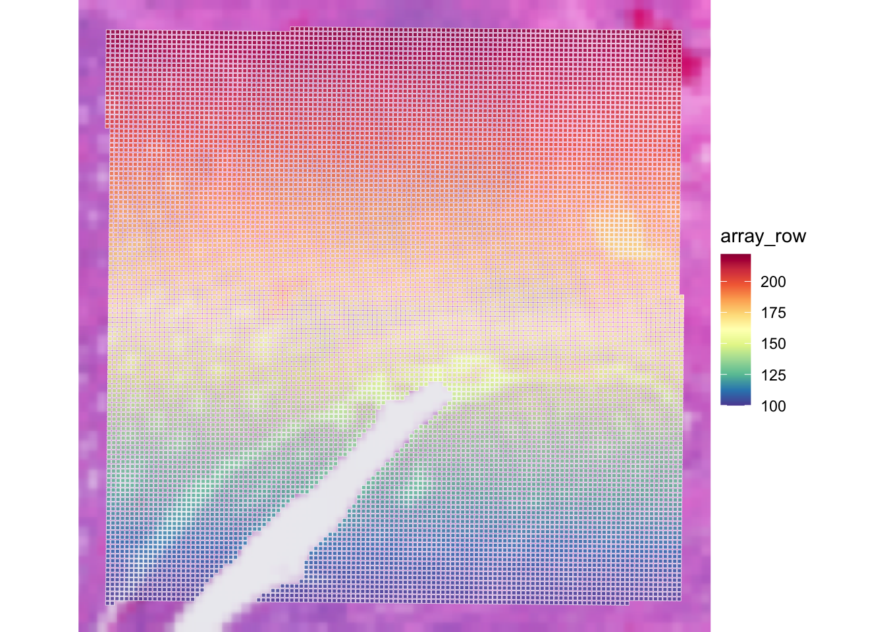

# Load necessary R libraries for spatial transcriptomics data analysis.
# library(DropletUtils)
# library(BumpyMatrix)
library(SpatialExperiment)
library(VisiumIO)
# library(arrow)
library(qs2)
library(ggspavis)
library(patchwork)
library(dplyr)Exercise 1
Learning Objectives
By the end of this exercise, you will be able to:
- Understand the structure of a
SpatialExperimentobject. - Access and interpret
spatialCoordsandimgData. - Perform basic subsetting operations on
SpatialExperimentobjects. - Combine multiple
SpatialExperimentobjects. - Apply image transformations (rotation, mirroring) to spatial data.
Libraries
Data for the course
We start with downloading the data. We will work with VisiumHD data from human colon cancer. The full dataset is available here. It’s a Visium HD dataset from human colon cancer.
We need more explanation here!
if (!dir.exists("data/Human_Colon_Cancer_P1/binned_outputs/")) {
dir.create("data")
download.file(
url = "https://seq-spatial-transcriptomics-training.s3.eu-central-1.amazonaws.com/Human_Colon_Cancer_P1.tar.gz",
destfile = "Human_Colon_Cancer_P1.tar.gz"
)
untar(
tarfile = "data/Human_Colon_Cancer_P1.tar.gz"
)
file.remove("data/Human_Colon_Cancer_P1.tar.gz")
} else {
message("Data exists, please proceed to next steps!")
}Data exists, please proceed to next steps!We will import a part of the downloaded files to create a SpatialExperiment object. For these exercises, we choose to use the largest bin size of 16 µm:
# Import Visium HD data from Space Ranger output into a SpatialExperiment object.
spe <- TENxVisiumHD(
spacerangerOut = "data/Human_Colon_Cancer_P1/",
processing = "filtered",
format = "h5",
images = "lowres",
bin_size = "016"
) |>
import()
# we will subset the dataset for computational and visual reasons
spe <- spe[, spatialCoords(spe)[, 1] * scaleFactors(spe) > 70 &
spatialCoords(spe)[, 1] * scaleFactors(spe) < 130 &
spatialCoords(spe)[, 2] * scaleFactors(spe) > 200 &
spatialCoords(spe)[, 2] * scaleFactors(spe) < 260]
Exercise
What other bin size do we have available?
Answer
Check out data/Human_Colon_Cancer_P1/binned_outputs. Here you will find three directories:
square_002um
square_008um
square_016umSo in addition to 16 µm, we also have 2 and 8 µm available.
Exploring the object
In this first exercise, we will dive into the SpatialExperiment object, a cornerstone of spatial transcriptomics analysis in R. We will learn how to load Visium HD data, explore the different components of the object, and perform basic manipulations. By the end of this session, you will have a solid understanding of how to handle spatial transcriptomics data within the R/Bioconductor ecosystem.

SpatialExperiment class structureThe different slots of the SpatialExperiment object can be approached with several helper functions that correspond with their names.
Exercise
Check out the outputs of running the following functions:
colData()spatialCoords()rowData()assay()imgRaster()reducedDims()
Questions:
- What kind of data is in the different slots?
- How many spots and genes do we have?
- Are spots in the tissue?
Answer
The slot colData contains metadata of each of the 14207 spots:
colData(spe) |> head()DataFrame with 6 rows and 6 columns
barcode in_tissue array_row array_col
<character> <integer> <integer> <integer>
s_016um_00144_00175-1 s_016um_00144_00175-1 1 144 175
s_016um_00204_00145-1 s_016um_00204_00145-1 1 204 145
s_016um_00191_00159-1 s_016um_00191_00159-1 1 191 159
s_016um_00111_00233-1 s_016um_00111_00233-1 1 111 233
s_016um_00202_00235-1 s_016um_00202_00235-1 1 202 235
s_016um_00102_00186-1 s_016um_00102_00186-1 1 102 186
bin_size sample_id
<character> <character>
s_016um_00144_00175-1 016 sample01
s_016um_00204_00145-1 016 sample01
s_016um_00191_00159-1 016 sample01
s_016um_00111_00233-1 016 sample01
s_016um_00202_00235-1 016 sample01
s_016um_00102_00186-1 016 sample01ncol(spe)[1] 14207We also have the column in_tissue here, and we can check whether all the spots are in the tissue:
colData(spe) |> as.data.frame() |>
group_by(in_tissue) |> summarise(number = n())# A tibble: 1 × 2
in_tissue number
<int> <int>
1 1 14207The slot spatialCoords maps each spot to the full resolution image:
spatialCoords(spe) |> head() pxl_col_in_fullres pxl_row_in_fullres
s_016um_00144_00175-1 10076.365 28256.34
s_016um_00204_00145-1 8356.073 24733.65
s_016um_00191_00159-1 9167.045 25500.94
s_016um_00111_00233-1 13447.496 30216.22
s_016um_00202_00235-1 13613.955 24899.03
s_016um_00102_00186-1 10696.244 30716.82The slot rowData contains metadata about the 18085 genes for which we measured expression:
rowData(spe) |> head()DataFrame with 6 rows and 3 columns
ID Symbol Type
<character> <character> <factor>
ENSG00000187634 ENSG00000187634 SAMD11 Gene Expression
ENSG00000188976 ENSG00000188976 NOC2L Gene Expression
ENSG00000187961 ENSG00000187961 KLHL17 Gene Expression
ENSG00000187583 ENSG00000187583 PLEKHN1 Gene Expression
ENSG00000187642 ENSG00000187642 PERM1 Gene Expression
ENSG00000188290 ENSG00000188290 HES4 Gene Expressionnrow(spe)[1] 18085The assay is the core matrix of the object. Corresponding to the genes (rows) and spots (columns):
assay(spe)<18085 x 14207> sparse DelayedMatrix object of type "integer":
s_016um_00144_00175-1 ... s_016um_00109_00223-1
ENSG00000187634 0 . 0
ENSG00000188976 0 . 0
ENSG00000187961 0 . 0
ENSG00000187583 0 . 0
ENSG00000187642 0 . 0
... . . .
ENSG00000212907 7 . 5
ENSG00000198886 29 . 15
ENSG00000198786 0 . 1
ENSG00000198695 2 . 1
ENSG00000198727 11 . 11Of course, also the image is included:
imgRaster(spe) |> plot()
And the slot for reducedDims is empty, as we didn’t perform any dimensionality reduction calculations yet:
reducedDims(spe)List of length 0
names(0): We saw that the rownames of the object were Ensembl IDs. However, for most purposes it’s easier to have gene symbols. Therefore, we replace the ensembl IDs, with the symbols stored in rowData:
rownames(spe) <- rowData(spe)$SymbolTo get a visual overview of what part of the slide is covered with spots we can use ggspavis::plotVisium. First without spots:
plotVisium(spe, spots = FALSE)
And with spots:
plotVisium(spe, point_shape = 22, point_size = 0.5) 
Coloured by e.g. gene expression:
plotVisium(spe, annotate = "PIGR", zoom = TRUE, point_size = 1,
point_shape = 22)Warning in guide(title = annotate, order = 1, override.aes = list(col = NA, : Arguments in `...` must be used.
✖ Problematic argument:
• override.aes = list(col = NA, size = 3)
ℹ Did you misspell an argument name?
Exercise
Check out the usage of plotVisium with ?plotVisium. Create a plot that zooms in into the spots, and colors the spots according to column array_row.
In which slot is array_row stored and what does it represent?
Answer
The column array_row is stored in colData, it represents in which row the spot is positioned. Of course, plotting this value is not particularly useful for biology. We will visualize more sensible values in the next chapter, when we do the quality control.
We can use the argument annotate to color according to a column in colData, and we can zoom in by specifying zoom = TRUE:
p <- plotVisium(spe, annotate = "array_row", zoom = TRUE, point_shape = 22)Warning in guide(title = annotate, order = 1, override.aes = list(col = NA, : Arguments in `...` must be used.
✖ Problematic argument:
• override.aes = list(col = NA, size = 3)
ℹ Did you misspell an argument name?p
Save the object
dir.create("results", showWarnings = FALSE)
qs_save(spe, file = "results/01_spe.qs2")Clear your environment
rm(list = ls())
gc()
.rs.restartR()
Important
Key Takeaways:
- The
SpatialExperimentobject is a versatile container for spatial transcriptomics data. - It allows for easy access and manipulation of spatial coordinates, image data, and assay data.
- Various operations like subsetting, combining, and image transformations can be performed efficiently.